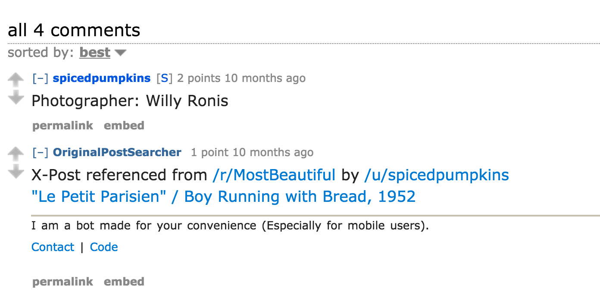
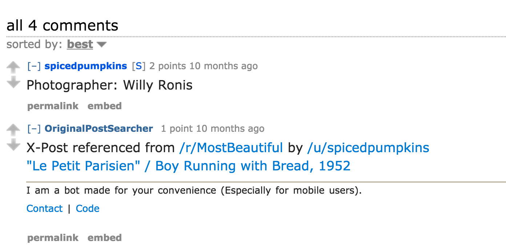

(20 pack)
#pre-internet-nolstalgia #simpler-times #oldschoolcool #lifebeforeinternet #flosslikeaboss


Staring at your new iphone like
 



This is how you feel when you hit flow, in anything field

So this is one of those deeper selections that I selected by way of it being a highly intriguing story as well as having a slight personal significance to me. Not too long ago I was jogging through this traditional street in Beijing when I ended up at the Forbidden City. The place is the most lightly heavily guarded place I've ever been. I eventually found my way into this elegant ancient garden. Running through this place is like putting a hot spoon into icecream. There's a certain awe level there. And at the time I was going through a bit of that not-sure-if-you're-going-to-make-it moments, as my marathon in North Korea was in a few days. I had injured my leg a month or so prior and the runner's knee had kept me off the regimen for a few weeks. I stopped and put that IPOD to some meditation app and just meditated right in that spot.

Imperial Gardens are the kind of place a super-saiyon might hang out.